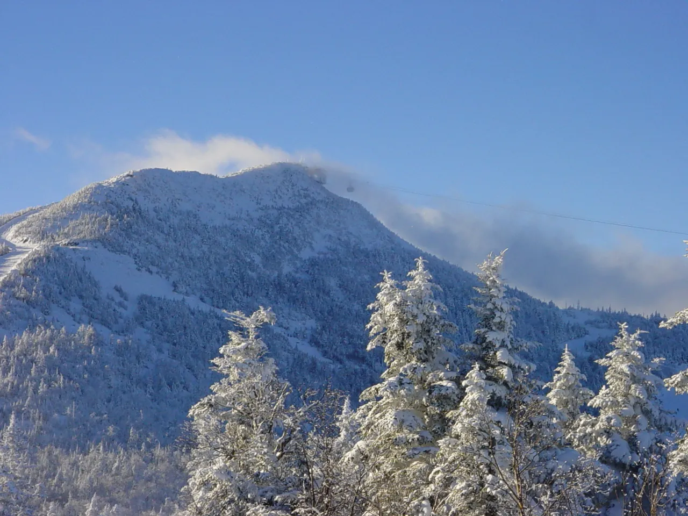

Jay Peak, Jay, Vermont · Ski conditions
Jay Peak Conditions and Webcams Today
Jay Peak's webcams today, its opening weekend and kid facts: family ticket prices, lessons, childcare and the indoor waterpark. About 6½ hours by car from New York City, Jay Peak says.
Family of 4: about $481 a weekend day, $399 midweek
Lift tickets for 2 adults and 2 kids 6-18, bought online ahead, with 6% tax; weekend is Fri-Sun. With 2 kids 5 and under: $407 weekend, $329 midweek. Our sum of posted prices, estimate. Read Nov 16; prices below.
Researched with AI (Miles Rowan) · sources linked and dated · How we check
Jay Peak's own status
Not open yetOpens Sat, Nov 28 (passholders and package guests Fri, Nov 27) (Jay Peak's opening weekend post, read Nov 16). Live lifts: Jay Peak's snow report.
Our webcam read
No cam read from us yet. Cam reads show here only when a recent one has passed a separate automated accuracy check.

Coming for the holidays? Christmas in New York City with kids, free and paid
Plan the day with kids
- Early season: The kids' lesson desk and childcare open Sat, Dec 12, two weeks after opening day, Jay Peak's pages say.
- Tickets: Buy online at least a day ahead: online prices aren't sold on the day, and the window costs more. Weekend prices run Friday to Sunday. Holiday prices: Dec 25 to Jan 3, Jan 16-18 and Feb 13-21.
- Weather: No refunds for weather or lift status, Jay Peak says.
- Lessons: Ages 4 to 6: Kinder (ski) or Riglet (snowboard), half day (3 hours) or full day. Ages 7 to 13: Jay Explorers, full day. Lessons start at 8:45 a.m.; full days run 5½ hours with a lunch break (lunch is an add-on). They meet at the Mountain Kids Adventure Center, Stateside Base Area. Reservations required; the lift ticket is extra.
- Childcare: Ages 6 weeks to 4 years, Fridays to Mondays from Dec 12 (plus holiday midweeks). Full day 8:30 a.m. to 3:30 p.m. or a half day. Book with a 50% deposit; immunization records or exemptions required.
Lift ticket, lesson and waterpark prices on Jay Peak's pages, read Nov 16:
- Family of 4 lift tickets, one day (2 adults, 2 kids 6-18, bought online ahead): about $481 on a weekend, $399 midweek (Mon-Thu), $496 on holidays, with 6% tax (our sum)
- Family of 4 with little kids, one day (2 adults, 2 kids 5 and under, bought online ahead): about $407 on a weekend, $329 midweek, $420 on holidays, with 6% tax (our sum)
- Day ticket bought online ahead: adult 19-64 / junior 6-18: $125 / $102 weekends; $105 / $83 midweek; $129 / $105 holidays
- Day ticket, age 5 and under: $50 midweek, $67 weekends, $69 holidays
- Kids' group lesson, full day, ages 4-13 (Sat-Sun): $284 ($264 Mon and Fri; $329 holidays); ages 4-6 half day $219 Sat-Sun; lunch add-on $55
- Kids' rentals (skis or board, boots, poles, helmet): $43 a day Sat-Sun ($40 Mon-Fri, $47 holidays)
- Childcare, ages 6 weeks to 4 years: $195 full day, $150 half day
- Pump House indoor waterpark, bought ahead: $44 ages 15+, $34 ages 4-14, 3 and under free; 2 adults and 2 kids 4-14 about $165 with tax (our sum)
From Jay Peak's 2026/27 lift ticket, kids' lesson and childcare pages. Lift ticket and waterpark prices add 6% Vermont tax; lesson prices include it; Jay Peak doesn't say for rentals or childcare. It doesn't say whether lesson and childcare prices are per child per day. The waterpark page shows no season dates. Jay Peak says rates can change without notice.
Lift tickets and lessons: Multi-day ticket prices aren't on the page we read, so check live. See Jay Peak 2026/27 lift tickets.
From Jay Peak lessons, Pump House waterpark rates, Jay Peak kids' group programs, Jay Peak childcare, Jay Peak getting here and Jay Peak opening weekend post, read Nov 16.
Getting there from New York City
- Car: Jay Peak lists about 6½ hours (371 miles) from New York City and 3½ hours from Boston.
- Train: the nearest Amtrak stop is St. Albans, about an hour away; a private shuttle can be booked at least 72 hours ahead (2-hour minimum, paid 7 days ahead).
- Fly: Burlington airport is about 1½ hours away; Montreal Trudeau about 2¼ hours, across the Canadian border.
Closer hills for a day trip: skiing near New York City with kids.
If the snow is thin
- Pump House indoor waterpark: Jay Peak's indoor waterpark, with day tickets sold apart from lift tickets.
- Weather: lift tickets aren't refunded for weather or lift status, so buy close to your ski day if the forecast is unsure.
From Pump House waterpark rates and Jay Peak 2026/27 lift tickets, read Nov 16.
Cam by cam
The 3 Jay Peak cam views our reader uses, in our own descriptive words (Jay Peak names its cams differently) (see Jay Peak's own cam page, as listed in our cam feed Nov 16): Summit view, Summit trail, Trail view. Once our reads start, each cam's last read time shows here.
How we read the cams: a program looks at Jay Peak's public webcam pictures and notes only what a picture can show: fresh snow, snow cover, snowmaking, moving lifts, how busy the base looks, visibility and the snow stake. Each read shows its time; after 90 minutes it is marked older, after 6 hours it is hidden. We never say whether terrain is safe, icy, groomed or open; Jay Peak's own report decides that. We don't show the cam pictures or count people.
Sources: Jay Peak webcams · Jay Peak opening weekend post · Jay Peak kids' group programs · Jay Peak childcare · Jay Peak getting here · Jay Peak lessons · Pump House waterpark rates (read Nov 16). We haven't skied Jay Peak.